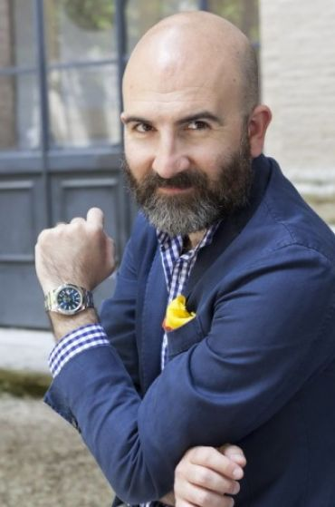
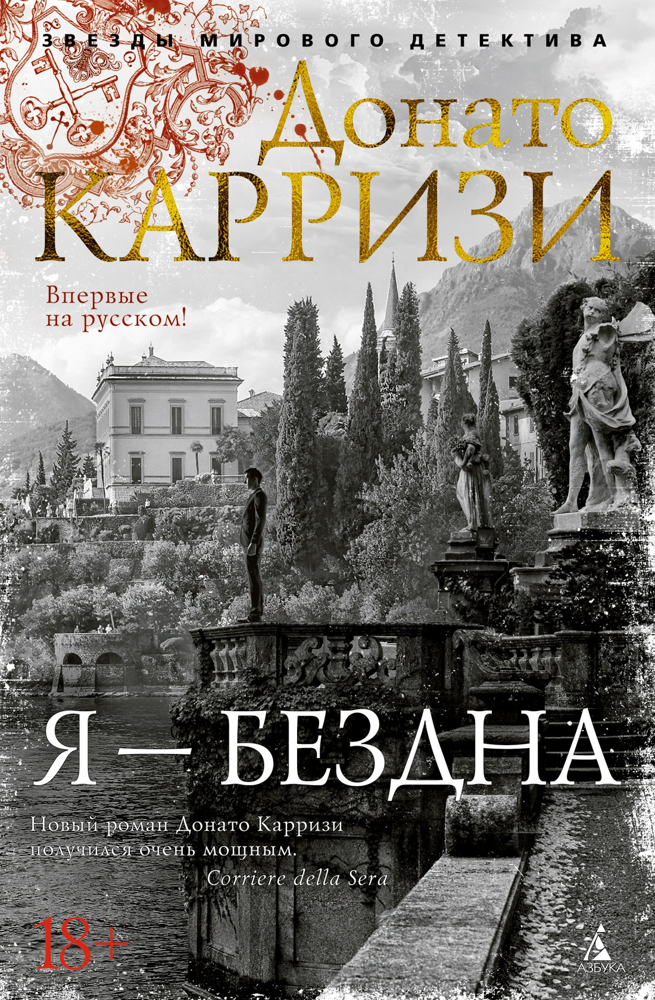
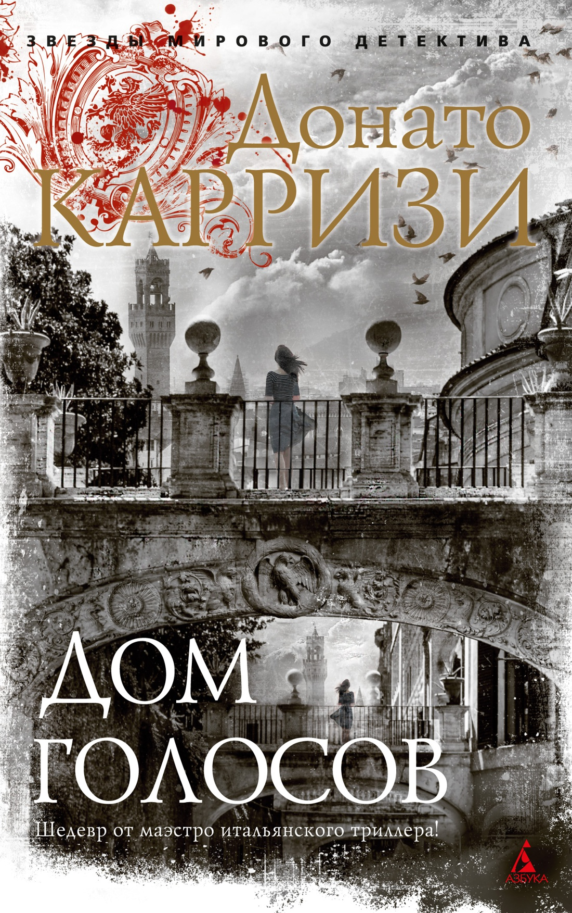
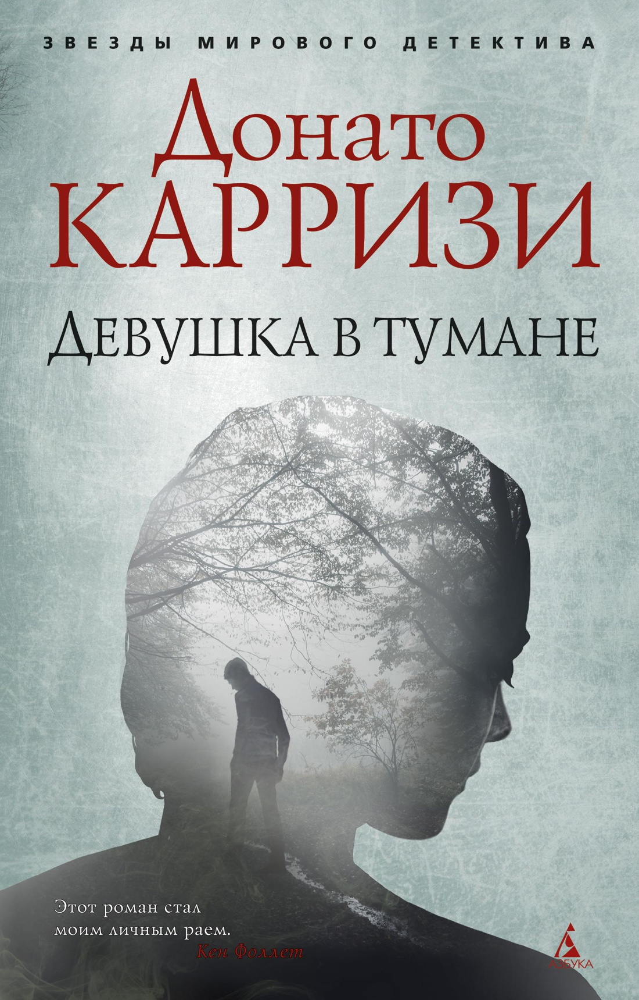
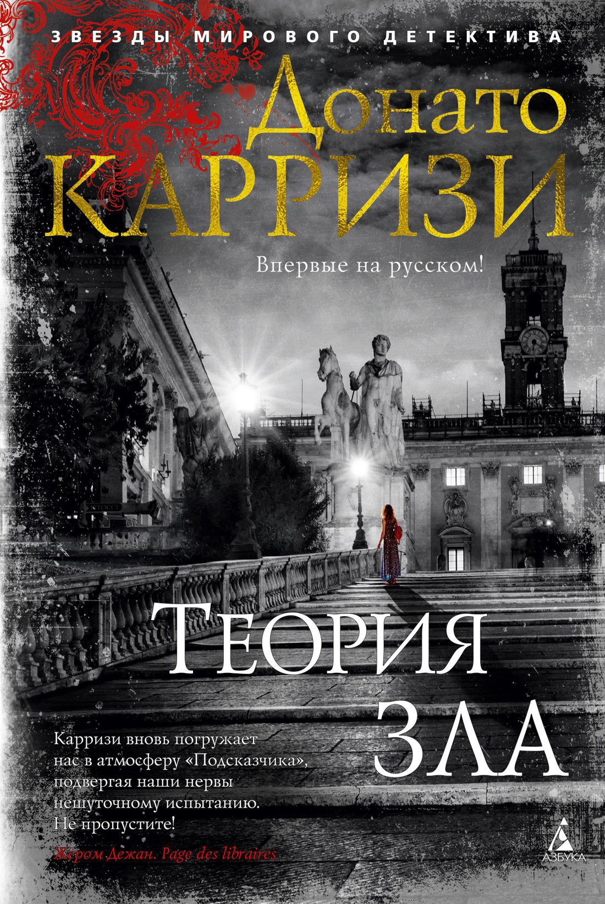

Маркус – охотник за аномалиями, человек, одаренный способностью видеть послания зла в самых запутанных преступлениях но лишенный воспоминаний о своей прежней жизни. Его новым делом становится поиск девушки, захваченной серийным убийцей в Риме, и только случайные на первый взгляд детали способны помочь расследованию. Смерть кроется в мелочах – этот урок Сандра усвоила, работая фотографом на местах убийств. Но гибель ее собственного мужа покрыта опасной тайной, важным ключом к которой становится встреча с Маркусом. Ведь истина зачастую спрятана у всех на виду.В основу романа положены реальные истории преступлений.Впервые на русском!
Еще о книге
«Как и в детективах Стига Ларссона и Ю Несбё, здесь расцветает Зло…Захватывающее чтение, полное тревог», — The Guardian «Я уж думала, что меня трудно удивить, много прочитано детективов с различными поворотами сюжета, но такого я не ожидала восхищаюсь. Когда я была уверена, что все поняла и разгадала, автор преподносил очередной сюрприз. Уже начала читать продолжение, потому что невозможно остановиться после первой книги», — skerty2015 (Эксперт LiveLib.ru) «Действующих лиц много, сюжетных линий, которые потом переплетаются, тоже немало. Читать было очень интересно», — @olga_depech (Instagram блогер).
Серия о Маркусе и Сандре
- Потерянные девушки Рима
- Охотник за тенью
- Маэстро теней
Цитаты из книги
- "Когда справедливость уже нельзя восстановить, остается выбор между прощением и местью."
- "Дьявол существует только потому, что люди творят зло."
- "Смерть хозяйничает в прошлом. Сомнение куда хуже, оно завладевает будущим."
- "Прошлое остается неизменным и продолжает притягивать к себе словно магнит."
Об авторе
Донато Карризи – писатель, сценарист. Широкую известность получил благодаря детективам «Девушка в тумане», «Девушка лабиринте», «Подсказчик». Книги автора издаются в 24 странах, на сегодняшний день продано более 3 миллионов копий.
Благодаря опыту общения Карризи с настоящими преступниками его романы очень правдоподобны и реалистичны. По словам автора, «Убийцей может стать любой. Не все они злые. Серийные убийцы, которых я встречал, были нормальными. К примеру, один человек жертвовал деньги благотворительным ассоциациям для защиты детей. И в то же самое время убивал детей».
В своих романах Карризи уделяет большое внимание описанию Рима, который становится еще одним персонажем. Для писателя важно, чтобы читатель погрузился в историю города и ощущал, будто он ходит по старинным итальянским улочкам.
Донато Карризи – не только мастер детектива и триллера, но и большой поклонник писателей, работающих в тех же жанрах. Среди любимых – Стивен Кинг, Стиг Ларссон и Кен Фоллетт.
Выбирая, что почитать у Донато Карризи, следует также обратить внимание на еще одну серию – «Маркус и Сандра». Речь идет о нетривиальной детективной паре. Священник, служитель одного тайного ордена и «охотник за аномалиями» Маркус и фотограф-криминалист Сандра вместе расследуют загадочные истории о похищениях, убийствах и тайнах прошлого. Чтобы лучше понять сюжет, книги об опасных приключениях детективов стоит читать по порядку: «Потерянные девушки Рима» (2011 г.), «Охотник за тенью» (2014 г.) и «Маэстро теней» (2016 г.).
Помимо серийных романов Донато Карризи написал две книги вне цикла. В 2015 г. вышел один из его самых известных детективов – «Девушка в тумане». Произведение разошлось тиражом более миллиона экземпляров. В 2017 г. книга была экранизирована, режиссером и сценаристом выступил сам Донато Карризи. Главную роль сыграл актер Жан Рено. Интересно, что этот фильм стал полнометражным режиссерским дебютом Карризи.
Помимо «Девушки в тумане» Донато снял еще один одноименный фильм по другой своей книге – «Девушка в лабиринте». В прокат он вышел в 2019 г. Главную роль сыграл актер Дастин Хоффман.
Второй внесерийный роман писателя – «Женщина с бумажными цветами» (2012 г.).
Вам может быть Интересно
-
Я - бездна. Донато Карризи
 -
Дом голосов. Донато Карризи
 -
Девушка в тумане. Донато Карризи
 -
Теория зла. Донато Карризи

Входит в подборку 10 лучших триллеров и книг ужасов